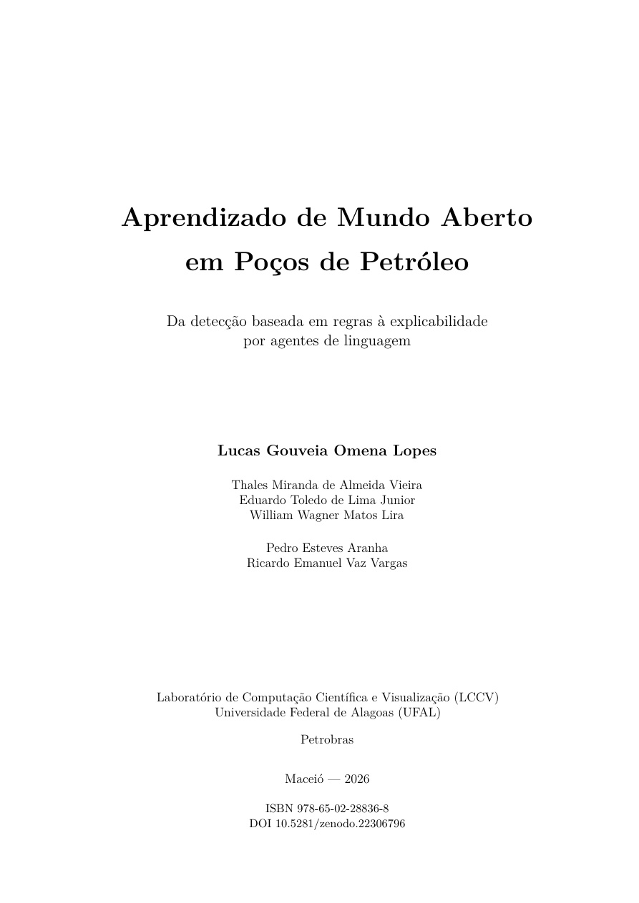

Fundamentos
Domínio, dados, aprendizado, redes profundas e detecção de novidades.
Livro aberto · edição 2026
Da detecção baseada em regras à explicabilidade por agentes de linguagem
Lucas Gouveia Omena Lopes · Thales Miranda de Almeida Vieira · Eduardo Toledo de Lima Junior · William Wagner Matos Lira · Pedro Esteves Aranha · Ricardo Emanuel Vaz Vargas
{{PAGE_COUNT}} páginas 18 capítulos 5 apêndices ISBN 978-65-02-28836-8

Este livro acompanha a detecção, a segmentação e a explicação de eventos indesejáveis em poços de petróleo ao longo de vários anos. Cada abordagem revela os limites da anterior.
O fio condutor é a passagem de três hipóteses que a prática desmente:
Domínio, dados, aprendizado, redes profundas e detecção de novidades.
Sistema dual em operação, ensemble binário e aprendizado de mundo aberto.
Classificação, segmentação com U-Net e distância de Mahalanobis no espaço latente.
Modelos de linguagem, o agente de diagnóstico e seus resultados.
Arquitetura de referência, requisitos de operação e agenda de pesquisa.
Edição integral
O visualizador depende do suporte do navegador a PDF. Também é possível abrir o arquivo diretamente.
Edição e pesquisa
LOPES, Lucas Gouveia Omena et al. Aprendizado de Mundo Aberto em Poços de Petróleo. 2026. DOI: 10.5281/zenodo.22306796.